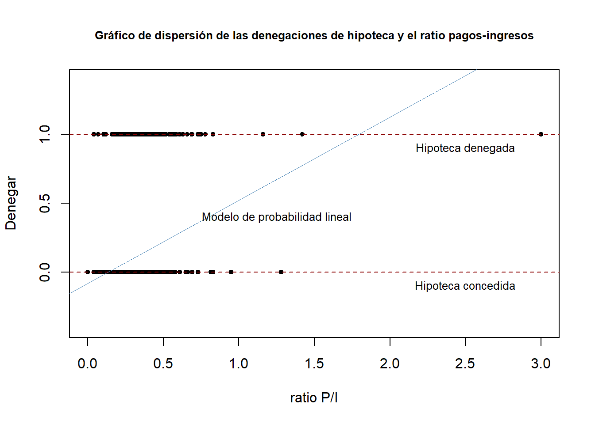
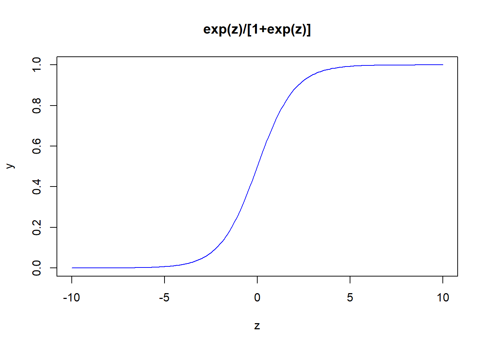

¿Qué ocurre cuando se desea usar la regresión múltiple para explicar eventos cualitativos?
El caso más sencillo es un evento del tipo binario, es decir, que \(y\) toma valores de cero y uno. Por ejemplo, \(y\) puede indicar si una persona trabaja o no trabaja, esta empleado o desempleado o, si una empresa es grande o pequeña. En cualquier caso se puede hacer que \(y=1\) denota uno de los resultados o \(y=0\) denota el otro resultado. También podría pensarse como éxito y fracaso. La demostración parte de la función de regresión poblacional.
Como \(y\) solo puede toma dos valores, los \(\beta_j\)no pueden interpretarse como una cambio en \(y\) para un aumento de \(x_j\)ceteris paribus. Recordar que en este caso \(y\) cambia de cero a uno, o no cambia. Partiendo del supuesto de media condicional cero\(E(u|X_1, X_2,...,X_k)=0\), tenemos:
El punto clave es que \(y\) es una variable binaria que toma valores de cero y uno, entonces tenemos que \(P(y=1|\mathbf{X})=E(y|\mathbf{X})\): la probabilidad de “éxito”. Por lo tanto, tenemos
La ecuación [3] dice que, la probabilidad de éxito, es decir \(p(x)=P(y=1|\mathbf{X})\), es una función lineal de las variables \(x_j\), también se le conoce como la probabilidad de respuesta. Dado que, las probabilidades deben sumar uno, \(P(y=0|\mathbf{X})=1-P(y=1|\mathbf{X})\), es también una función lineal de las \(x_j\)
Por lo tanto, a un modelo de regresión lineal múltiple en el que la variable dependiente es una variable binaria se le conoce como: El modelo de probabilidad lineal (MPL), porque la probabilidad de respuesta es lineal a los parámetros \(\beta_j\). En el MPL, los \(\beta_j\) miden la variación de la probabilidad de éxito de variar \(x_j\)ceteris paribus:
de: Desempleo, 1 si estas desempleado. 0 otro caso
educ: años de educación
El modelo de regresión lineal múltiple permite estimar el efecto de diversas variables explicativas sobre un evento cualitativo. Entonces la mecánica de los MCO es la misma de siempre:
\(\widehat{y}\): es la probabilidad de éxito predicha
\(\widehat{\beta}_0\): es la probabilidad de éxito cuando cada una de las \(x_j=0\)
\(\widehat{\beta}_1\): mide la variación de la probabilidad de éxito predicha cuando \(x_1\) varia en una unidad, mientras las demás permanecen constantes.
\(\widehat{\beta}_j\): mide la variación de la probabilidad de éxito predicha cuando \(x_j\) varia en una unidad, mientras las demás permanecen constantes.
¡¡Concepto clave: para interpretar correctamente un MPL, debe saberse qué es lo que constituye el éxito!!
Recomendación: la variable dependiente debe describir el nombre del evento cuando \(y=1\)
Por ejemplo, si estudiamos los determinantes del desempleo, la variable \(y\) debe llamarse desempleo
3.2 Ejemplo 1: Determinantes de la denegación en solicitudes de hipoteca en el mercado inmobiliario (Stock and Watson 2012)
\(denegar=1\) le negaron la hipoteca y \(0\) otro caso
Seria \(\widehat{\beta_1}=0.604\times0.01\approx 0.06\)
Una vez que tengo el MPL, puedo graficar
plot(x = HMDA$pirat,y = HMDA$deny,main ="Gráfico de dispersión de las denegaciones de hipoteca y el ratio pagos-ingresos", xlab ="ratio P/I", ylab ="Denegar", pch =20, ylim =c(-0.4,1.4), cex.main =0.8)# Añadir las lineas horizontalesabline(h=1, lty =2, col ="darkred")abline(h=0, lty =2, col ="darkred")text(2.5, 0.9, cex =0.8, "Hipoteca denegada")text(2.5, -0.1, cex =0.8, "Hipoteca concedida")# Añadiendo la linea del MPLabline(denymod1, lwd =0.8,col ="steelblue")text(1.25, 0.4, cex =0.8, "Modelo de probabilidad lineal")

Presentación de la regresión
library(stargazer)library(sandwich)eshr <-list(sqrt(diag(vcovHC(denymod1, type ="HC1"))))stargazer(denymod1,denymod1, type ="text", se = eshr)
Como los modelos de regresión lineal simple poseen el problema de sesgo de variable omitida, y de debido a que el gráfico muestra comportamientos que no son solo explicados por la variable independiente (pirat), se añade otra variable que puede ayudar a explicar el fenómeno. La variable es respecto a la conseción de hipoteca a las personas negras (afam)
colnames(HMDA)[13] <-"negra"denymod2 <-lm(deny ~ pirat + negra, data = HMDA)eshr <-list(sqrt(diag(vcovHC(denymod1, type ="HC1"))),sqrt(diag(vcovHC(denymod2, type ="HC1"))))stargazer(denymod1, denymod2,type ="text",se = eshr,df = F, report ="vcts*")
3.3 Ejemplo 2: Determinantes del trabajo femenino (Wooldridge 2009)
\(y\): inlf: (la fuerza de trabajo femenino), una variable binaria que indica, si una mujer casada participó en la fuerza de trabajo durante 1975: \(infl=1\) la mujer informa haber trabajado fuera de la casa, por un salario ese año, cero otro caso
\(x_1=nwifeinc\) los ingreso del esposo en miles de dólares (-)
\(x_2=educ\) años de educación (+)
\(x_3=exper\) años de experiencia (+)
\(x_4=exper^2\) años de experiencia al cuadrado (-)
Para interpretar las estimaciones, hay que recordar que una variación en la variable independiente modifica la probabilidad de que \(inlf=1\). Por ejemplo, educ si las demás variables permanecen constantes, una año más de educación hace que la probabilidad de participación en la fuerza laboral aumente en 3.8%. Si consideramos de forma literal a esta ecuación, entonces 10 años más educación incrementarían la probabilidad de permanecer en la fuerza laboral en 38%.
El coeficiente de nwifeinc significa que si \(\Delta nwifeinc=10\) (un incremento de $10,000), la probabilidad de que una mujer permanecer en la fuerza de trabajo disminuye en 3.4%. Como se puede ver, esta disminución es pequeña a pesar de aumentar el salario en 10,000 dólares.
La experiencia ha sido introducida como una función cuadrática para que el efecto de la experiencia sea decreciente sobre la probabilidad de participar en la fuerza laboral. Ceteris paribus, la variación de la probabilidad se aproxima como \(0.039-2(0.0006)exper=0.039-0.0012exper\). El punto en el que la experiencia transcurrida no tiene efecto sobre la probabilidad de participación en la fuerza laboral es: \(0.039/0.0012=32.5\). Sólo 13 mujeres de las 753 en esta muestra tiene más de 32 años de experiencia.
A diferencia de la cantidad de hijos entre 6 y 18 años, la cantidad de hijos menores a 6 años tiene un impacto enorme sobre la probabilidad de participación en la fuerza de trabajo. A tal punto que, tener un hijo menor a seis años adicional, reduce la probabilidad de participación en la fuerza trabajo en 26.18%. En la muestra, menos de 20% de las mujeres tienen al menos un hijo pequeño.
Respecto al PPC el modelo predice en 73.44% a la variable infl.
3.3.3 Límites del MPL
Las dos desventajas más importantes son que las probabilidades ajustadas pueden ser menores que cero o mayores que uno.
summary(mroz.mpl$fitted.values)
Min. 1st Qu. Median Mean 3rd Qu. Max.
-0.3451 0.4016 0.5880 0.5684 0.7592 1.1272
Se demuestra para este ejemplo que algunos valores ajustados son menores que cero y mayores que uno.
y, el efecto parcial de cualquier variable explicativa (si aparece en la ecuación en su nivel) es constante
3.4 Ejemplo 3: Un modelo de probabilidad lineal para arrestos (Wooldridge 2009)
Sea arr86 una variable binaria igual a uno si un hombre fue arrestado en 1986 e igual a cero si no fue así. La población es un grupo de hombres de California nacidos en 1960 o en 1961, que habían sido detenidos al menos una vez antes de 1986. Un modelo de probabilidad lineal para describir arr86 es:
\(\widehat{\beta}_0=0.44062\), es la probabilidad de ser arrestado que se predice a un hombre, que no ha sido condenado, que no ha estado en prisión despues de los 18 años, que no ha estado en prisión en 1986 y que ha estado desempleado todo el año
\(\widehat{\beta}_2; \widehat{\beta}_3\) que pertenecen a las variables avgsen y tottime, respectivamente. No son estadísticamente significativas (no tiene asteriscos). El signo de avgsen es contrauntuitivo, pues se esperaria que condenas más largas disminuyan la probabilidad de ser arrestado en 1986.Con respecto a tottime, según los datos haber tenido meses en prisión de los 18 y antes de 1986, disminuye la probabilidad de ser arrestado en 1986.
ptimes86 el aumento de probabilidad de ser condenado en 1986, disminuye la probabilidad de ser arrestado en promedio en 2.2%. Si un hombre esta en prisión no puede ser arrestado. Como ptimes86 esta medida en mese, 6 meses más en prisión, reduce la probabilidad de ser detenido en \(0.0022\times6\approx0.132\). En esta variable se puede observar otra vez, que el MPL no cierto en todos los rangos de variables independientes. Por ejemplo, si un hombre está en prisión durante 12 meses de 1986, no puede ser detenido en 1986. Ceteris paribus, cuando \(ptimr86=12\) la probabilidad predicha es de \(0.44-0.22\times12=0.177\) que es distinta de cero
qemp86 tener un empleo reduce la probabilidad de detención de manera significativa. Ceteris paribus un hombre que ha sido empleado durante 4 trimestres, la probabilidad de ser detenido se reduce en \(0.04283\times\approx0.172\)
3.5 Incorporando regresores binarios al MPL
En los modelos de variable dependiente binaria, se puede incluir variables independientes binarias. Este coeficiente mide la diferencia que se predice para la probabilidad en la relación con el grupo base. Así, incluimos regresores binarios en el MPL para arr86
# Limites del MPLsummary(arr86.MPL.bi$fitted.values)
Min. 1st Qu. Median Mean 3rd Qu. Max.
-0.05598 0.21483 0.26501 0.27706 0.36119 0.61273
3.5.1 Interpretaciones
El coeficiente black significa que, ceteris paribus un hombre negro tiene una probabilidad del 17% mayor de ser detenido frente a un hombre blanco. Otra forma de expresar esto, es que la probabilidad de ser detenido es de 17 puntos porcentuales mayor para los negros que para los blancos.
De la misma manera que la versión del modelo de regresión lineal múltiple en el MPL se puede verificar el cumplimento de los supuestos.
3.5.2 Supuestos
3.5.2.1 Homocedasticidad
La homocedasticidad o varianza constante, su incumplimiento se conoce como heterocedásticidad o varianza no constante
Su incumplimento tiene efecto sobre la eficiencia de los estimadores de MCO.
Su incumplimiento, hace que las pruebas \(t\) o \(f\) se invaliden, pues el cálculo de la varianza supone homocedásticidad que no se cumple. Por lo tanto, la matriz de varianza covarianza esta mal calculada.
Existen dos formas de la heterocedasticidad, conocida y desconocida. Es común la forma desconocida, por tal motivo calculamos errores estándar heterocedástico robustos
Hipótesis
\[H_0:\sigma^2\]
\[H_a:\sigma^2_i\]
# Test de homcedasticidadlibrary(lmtest)# El test de Breusch-Paganbptest(mroz.mpl)
studentized Breusch-Pagan test
data: mroz.mpl
BP = 24.224, df = 7, p-value = 0.00104
# Test de Goldfeld-Quandtgqtest(mroz.mpl)
Goldfeld-Quandt test
data: mroz.mpl
GQ = 2.488e+27, df1 = 369, df2 = 368, p-value < 2.2e-16
alternative hypothesis: variance increases from segment 1 to 2
The following object is masked from 'package:AER':
tobit
The following object is masked from 'package:lmtest':
lrtest
The following object is masked from 'package:car':
logit
Cargando paquete requerido: rpart
Cargando paquete requerido: randomForest
randomForest 4.7-1.2
Type rfNews() to see new features/changes/bug fixes.
Important regclass change from 1.3:
All functions that had a . in the name now have an _
all.correlations -> all_correlations, cor.demo -> cor_demo, etc.
Jarque Bera Test
data: mroz.mpl$residuals
X-squared = 36.741, df = 2, p-value = 1.051e-08
3.6 Modelos Logit y Probit para la respuesta binaria
El MPL es un modelo simple, que tiene varias desventajas. Las dos más importantes, como vimos en los ejemplos anteriores, son que las probabilidades ajustadas pueden ser menores que cero o mayores que uno y el efecto parcial de cualquier variable explicativa es constante. Esta limitaciones del MPL se superan con modelos de respuesta binaria más sofisticados.
En un modelo de respuesta binaria, el interés principal yace en la probabilidad de respuesta
\[P(y=1|\mathbf{x})=P(y=1|x_1,x_2,...,x_k)[6]\] Donde: \(\mathbf{x}\) denota el conjunto total de variable explicativas. Por ejemplo, \(\mathbf{x}\) podría contener varias características individuales como la educación, edad, estado civil, etc., que afecta, por ejemplo, al estado del empleo, incluye una variable de binaria para la participación en reciente programa de empleo
3.6.1 Especificación del modelo logit y probit
En el MPL, se suponía que la probabilidad de respuesta es lineal al conjunto de parámetros, \(\beta_j\). Para evitar las limitaciones del MPL, considere una clase de modelos de respuesta binaria de la forma:
\[P(y=1|\mathbf{x})=G(\beta_0+\beta_1X_1+\beta_2X_2+...+\beta_kX_k)=G(\beta_0+\mathbf{x\beta})[7]\] donde \(G(.)\) es una función que asume valores estrictamente entre 0 y 1: \(0<G(.)<1\) para todos los número reales \(z\). Esto asegura que las probabilidades de respuesta estimada sean estrictamente entre cero y uno. Note que: \(\mathbf{x\beta}=\beta_1X_1+\beta_2X_2+...+\beta_kX_k\)
Se han sugerido varias funciones no lineales para la función \(G(.)\) a fin de asegurar que las probabilidades estén entre cero y uno. Las dos funciones que estudiaremos en esta clase, se usan en la mayoría de aplicaciones (junto con el MPL). En el Modelo Logit, \(G(.)\) es la función logística:
\[G(z)=\frac{exp(z)}{[1+exp(z)]}=\frac{e^z}{[1+e^z]}=\Lambda(z) [8]\] Que está entre cero y uno para todos los números reales \(z\). Esta es la función de distribución acumulada (fda) para una variable aleatoria logística estándar.
En el Modelo Probit, \(G(.)\) es la función de distribución acumulada normal estándar, que viene dada de la siguiente forma:
\(\phi(z)\) es la función de densidad normal estándar
\[\phi(z)=(2\pi)^{-1/2}exp(-z/2)=\frac{e^{-z/2}}{\sqrt{2\pi}}[10]\] Esta elección de \(G(.)\) asegura que \(0<P(y=1|\mathbf{x})<1\), para todos los valores de los parámetros y las \(x_j\)
Las funciones \(G(.)\) de Logit y Probit son crecientes. Cada una aumenta con más rapidez en \(z=0\), \(G(z)\rightarrow 0\) a medida que \(z\rightarrow -\infty\) y, \(G(z)\rightarrow 1\) a medida que \(z\rightarrow \infty\)
z<-seq(-10,10,0.1)y<-exp(z)/(1+exp(z))plot(y~z, main ="exp(z)/[1+exp(z)]", type ="l", col="blue")

Los modelos Logit y Probit pueden derivarse a partir de un modelo de variable latente subyacente.
Sea \(y^*\) una variable inobservable, o latente determianda por:
Aquí se introduce la notación \(1[.]\) para definir un resultado binario. La función \(1[.]\) es la función indicador, que asume valor de uno si el evento dentro de los corchetes es verdadero y cero si es falso, Entonces tenemos:
\[y=1[y^*>0][12]\]\[y=0[y^*\leq0]\]
Se supone que \(e\) es independiente de \(\mathbf{x}\) y que \(e\) tiene un distribución logística estándar o normal estándar. En cualquier caso, \(e\) se distribuye simétricamente en torno a cero, lo que significa que \(1-G(-Z)=G(z)\) para todos los números reales de \(z\).
Los economistas tienden a favorecer el supuesto de normalidad para \(e\), lo cual es la razón por la que en Econometría el modelo Probit es más popular que el logit. Además, varios problemas de especificación, que se tratarán después, se analizan fácilmente mediante Probit debido a las propiedades de la distribución normal.
Dado estos supuestos podemos calcular la probabilidad de respuesta para \(y\):
\[P(y=1|\mathbf{x})=P(y^*>0|\mathbf{x})=P(e>-(\beta_0+\mathbf{x\beta})|\mathbf{x})=\\1-G[-(\beta_0+\mathbf{x\beta})]=G(\beta_0+\mathbf{x\beta})[13]\] uno de los objetivos de los modelos de respuesta binaria, es explicar los efectos de las \(x_j\) sobre la probabilidad de respuesta \(P(y=1|\mathbf{x})\).Cuidado, la formula de la variable latente tiende a dar la impresión de que lo que principalmente interesa son los efectos de cada \(x_j\) sobre \(y^*\). Hay que aclarar que en los modelos Logit y Probit la dirección de efectos de \(x_j\) sobre \(E(y|\mathbf{x})=P(y=1|\mathbf{x})=G(\beta_0+\mathbf{x\beta})\)
Aclarando que:
\[E(y^*|\mathbf{x})=\beta_0+\mathbf{x\beta}-[14]\] Como la variable latente pocas veces tiene una unidad de medición definida, las magnitudes de cada \(\beta_j\) no son, útiles por sí mismas, a diferencia de las magnitudes calculadas por el MPL. Entonces para la mayoría de los propósitos, se requiere estimar el efecto de \(x_j\) sobre la probabilidad de éxito \(P(y=1|\mathbf{x})\), esto se complicado por la naturaleza no lineal de \(G(.)\). Esto nos lleva a definir tres casos de efectos parciales:
3.6.2 Variables aproximadamente continuas:
Para hallar el efecto parcial de las variables aproximadamente continuas sobre la probabilidad de respuesta, se recurre al cálculo. Si \(x_j\) es una variable aproximadamente continua, su efecto parcial sobre \(p(x)=P(y=1|\mathbf{x})\) se obtiene de la siguiente derivada parcial:
\[g(z)\equiv\frac{dG}{dz}(z) [16]\] Debido a que \(G\) es la fda de una variable aleatoria continua, \(g\) es la función de densidad de probabilidad.
En los casos de logit y probit, \(G(.)\) es una fda estrictamente creciente y, por lo tanto, \(g(z)>0\forall z\). Por lo tanto, el efecto parcial de \(x_j\) sobre \(p(\mathbf{x})\) depende de \(\mathbf{x}\) a través de la cantidad positiva \(g(\beta_0+\mathbf{x\beta})\), lo que significa que el efecto parcial siempre tiene el mismo signo que \(\beta_j\)
La ecuación de la derivada parcial muestra que los efectos relativos del cualquiera las variables explicativas continuas no depende de \(\mathbf{x}\), la razón de los efectos parciales de \(x_j\) y \(x_h\) es \(\frac{\beta_j}{\beta_h}\). El caso típico de que \(g\) sea un densidad simétrica en torno a cero, con una única moda en cero, el mayor efecto ocurre cuando \(\beta_0+\mathbf{x\beta}=0\). Por ejemplo:
De nuevo, esto depende de todos los valores de las otras \(x_j\). Por ejemplo, si \(y\) es un indicador de empleo y \(x_1\) es una variable binaria que indica la participación en un programa de capacitación laboral, entonces es el cambio en la probabilidad de empleo debido a este programa de capacitación; esto depende de las demás características que afectan la posibilidad de obtener el empleo, como la educación y la experiencia. Observe que saber el signo del \(\beta_1\) es suficiente para determinar si el programa tuvo un efecto positivo o negativo. Pero para hallar la magnitud del efecto, se tiene que estimar la cantidad usando la anterior ecuación [17].
3.6.4 Cuando la variable explicativa es discreta
Por ejemplo, el número de hijos. Si \(x_k\) denota esta variable, el efecto sobre la probabilidad de que \(x_k\) cambien de \(c_k\) a \(c_k+1\) es simplemente:
3.6.5 Estimación de máxima verosimilitud de los modelos Logit y Probit
Para los MPL se uso mínimos cuadrados ordinarios (MCO) o, si existe heterocedasticidad, mínimos cuadrados ponderados (MCP). Ahora bien, debido a naturaleza no lineal \(E(y|\mathbf{x})\), MCO y MCP no son aplicables, por esta razón se usa la estimación de máxima verosimilitud (EMV). Para estimar los modelos de variables dependientes limitadas, los métodos de máxima verosimilitud son indispensables. Como la EMV está basada en la distribución de \(y\) dada \(\mathbf{x}\), la heterocedasticidad en \(Var(y|\mathbf{x})\) automáticamente se toma en cuenta.
Suponiendo que se tiene una muestra aleatoria \(n\). Para obtener el estimador de máxima verosimilitud, condicional sobre las variables explicativas, es necesario la densidad de \(y_i\) dada \(\mathbf{x_i}\). Esto se escribe como:
Para simplificar, se adsorbe el intercepto en el vector \(\mathbf{x_i}\). La función log-verosimilitud para cada observación \(i\) es una función de los parámetros y los datos (\(\mathbf{x_i;y_i}\))), aplicando el logaritmo a la anterior ecuación tenemos:
\[\mathcal{l_i(\beta)}=y_ilog[G(\mathbf{x_i\beta})]+(1-y)log[1-G(\mathbf{x_i\beta})] [18]\] Como \(G(.)\) está estrictamente definida entre cero y uno para logit y probit, \(\mathcal{l_i(\beta)}\) está bien definida para todos los valores \(\beta\)
La log-verosimilitud para un tamaño de muestra \(n\) se obtiene al sumar todas las observación de la ecuación anterior:
\[\mathcal{L_i(\beta)=\Sigma_{i=1}^n}\mathcal{l_i(\beta)}[19]\] La EMV de \(\beta\), denotada como \(\widehat{\beta}\), maximiza esta log-verosimilitud. Si \(G(.)\) es la fda logit estándar, entonces \(\widehat{\beta}\) será el estimador Logit; si \(G(.)\) es la fda normal estándar, entonces \(\widehat{\beta}\) será el estimador Probit.
3.6.6 Ejemplos de aplicación
Continuaremos con los ejemplos usados en el MPL, como son: la Participación en la fuerza laboral de las mujeres casadas, un modelo de probabilidad para arrestos y, sumaremos el ejemplo de la denegación de una hipoteca (Stock and Watson 2012)
¿Cuál es la probabilidad de salir de que María salga a trabajar, dado que tiene su esposo un ingreso mensual 300USD, tiene 4 años de educación, nunca ha trabajo, tiene 29 años y un niño de 3 años?
# En el MPLcambio.MPL <-predict(MPL.mroz,newdata=data.frame("nwifeinc"=(300*12)/1000,"educ"=4,"exper"=0,"expersq"=0,"age"=c(29,29+3),"kidslt6"=1,"kidsge6"=c(0,1)),type ="response")diff(cambio.MPL)*100
2
-3.526018
3.6.6.4 Modelo Logit estimado con FDA logística estándar
3.6.6.5 Comparación de los modelos MPL, Logit y Probit
Para esta comparación se va usar los errores heterocedástico robustos.
library(sandwich)eher<-list(sqrt(diag(vcovHC(MPL.mroz, type ="HC1"))),sqrt(diag(vcovHC(mroz.logit, type ="HC1"))),sqrt(diag(vcovHC(mroz.probit, type ="HC1"))))stargazer(MPL.mroz, mroz.logit, mroz.probit,se = eher,digits =3,type ="text",title ="Tabla 2: Estimaciones MPL, logit y probit de la participación en la fuerza laboral",df=F,header = F)
Como podemos ver en la tabla 2 los signos y la significancia es la misma para todas las variables en los tres modelos. Por ejemplo, la variable educ y exper son estadísticamente significativas en los tres modelos y ambas tienen un signo positivo respecto a la probabilidad de la participación en la fuerza laboral de las mujeres. En un primer momento no es posible comparar las estimaciones logit y probit con las del MPL. Para hacerlas comparables se debe usar el efecto parcial promedio (EPP). Wooldridge (2010, 585) siguiere factores escalares que se deben pre-multiplicar por los coeficientes de logit y probit para hacerlos comparables con el MPL. Para Probit es 0.301 y para logit es 0.179.
Usando factores escalares logit y probit para comparar con coeficientes MPL
El ejemplo de la variable educ. Si multiplico el coeficiente de educ en logit por su factor se obtiene: \(0.179(0.221)\approx0.040\) y coeficiente probit educ es de alrededor de \(0.301(0.131)\approx0.039\).Como se puede observar, ambos coeficientes son muy cercanos a la estimación de MPL que es de \(0.038\). También la variable discreta kidslt6, los coeficientes escalados logit y probit son similares al coeficiente del MPL de \(-0.262\). Estos son \(0.179(-1.443)\approx-0.258\) (logit) y, \(0.301(-0.868)\approx-0.261\) (probit)
La mayor diferencia entre el modelo MPL y los modelos logit y probit es que el MPL supone efectos constantes para educ, exper, kidslt6, etc., mientras que los modelos logit y probit implican magnitudes decrecientes de los efectos parciales
3.6.6.6 Curva decreciente
En esta sección vamos a observar como los modelos no lineales logit y probit muestran que no es lo mismo tener niño pequeño, dos o tres, etc, para reducir la probabilidad de salir a trabajar
mpl.simple <-lm(inlf~ kidslt6, mroz)plot(x = mroz$kidslt6,y= mroz$inlf,main ="Modelo probit para los determinates del trabajo femenino",xlab ="Niños menore a seis años",ylab ="Infl, si una mujer casada sale a trabajar por un salario",pch=20,ylim =c(-0.4, 1.4),xlim =c(-0.2,8))grid()# Añadir las lineas horizontales y el textoabline(h=1, lty=2, col="darkred")abline(h=0, lty=2, col="darkred")text(2.5, 0.9, cex =0.8, "Sale a trabajar")text(2.5, -0.1, cex =0.8, "No sale a trabajar")# añadiendo la linea de regresión probitx <-seq(0,7,1)y <-predict(mroz.probit.simple, list(kidslt6=x), type ="response")lines(x,y,lwd=1.5, col="steelblue")# añadiendo la linea de regresión logitt <-predict(mroz.logit.simple, list(kidslt6=x), type ="response")lines(x,t,lwd=1.5, col="pink")# añadiendo la linea de regresión MPLm <-predict(mpl.simple, list(kidslt6=x), type ="response")lines(x,m,lwd=1.5, col="green")
3.6.7 Interpretaciones de las estimaciones Logit y Probit
Las estimaciones de coeficientes, sus errores estándar y el valor de la función de log-verosimilitud se pueden obtener mediante todos los paquetes de software (R) que realicen logit y probit, y se deben reportar en cualquier aplicación. Los coeficientes dan los signos de los efectos parciales de cada \(x_j\) sobre la probabilidad de respuesta y la significancia estadística de \(x_j\) está determinada por si se puede rechazar \(H_0:\beta_j=0\) a un nivel de significancia (\(\alpha\)).
Como vimos anteriormente para el MPL se puede calcular el porcentaje predicho correctamente
Existen varias medidas de bondad de ajuste como pseudo R-cuadradas. MacFadden (1974) sugiere la medida \(1-\frac{\mathscr{L}_{nr}}{\mathscr{L}_{o}}\), donde \(\mathscr{L}_{nr}\) es la función de log-verosimilitud para el modelo estimado y,\(\mathscr{L}_{o}\) es la función de probabilidad de log en el modelo con sólo un intercepto. ¿Por qué esta medida es lógica? Recordar que las log-verosimilitud son negativas y, por tanto \(\frac{\mathscr{L}_{nr}}{\mathscr{L}_{o}}=\frac{|\mathscr{L}_{nr}|}{|\mathscr{L}_{o}|}\). Además. \(|\mathscr{L}_{nr}|\leq|\mathscr{L}_{o}|\). Si las covarianzas no tiene poder explicativo, entonces \(\frac{\mathscr{L}_{nr}}{\mathscr{L}_{o}}=1\), la pseudo R-cuadrada será igual a cero, como la R-cuadrada usual es cero en una regresión lineal cuando las covariadas no tienen poder explicativo.
Por lo general, \(|\mathscr{L}_{nr}|<|\mathscr{L}_{o}|\), en cuyo caso \(1-\frac{\mathscr{L}_{nr}}{\mathscr{L}_{o}}>0\). Supongamos que \(\mathscr{L}_{nr}\rightarrow0\), la pseudo-Rcuadrada tiene a uno. Pero en los modelos logit y probit no pueden llegar a cero \(\mathscr{L}_{nr}\) ya que eso requeriría que las probabilidades estimadas cuando \(y_i=1\) fueran iguales a la unidad y que las probabilidades estimadas cuando \(y_i=0\) fueran todas iguales a cero
3.6.8 Cálculo de la speudo-\(R^2\) de MacFadden
Segun Stock y Watson (2011), las llamadas pseudo-\(R^2\) se usan para medir la calidad del ajuste, estas medidas comparan el valor de la probabilidad máxima log-verosimulitud con todos los regresores, con la probabilidad de un modelo sin regresores (modelo nulo) regresión en una constante
Por ejemplo, considere una regresión Probit. El pseudo-\(R^2\) esta dado por:
\[pseudo-R^2=1-\frac{ln(f^{max}_{full})}{ln(f^{max}_{null})} [20]\] Donde: \(f^{max}_j\in[0,1]\) denota la probabilidad máxima para el modelo \(j\)
El razonamiento detrás de esto, es que, la probabilidad maximizada aumenta a medida que se agregan regresores adicionales al modelo, de manera similar a la disminución en \(SRC\) cuando se agregan regresores en un modelo de regresión lineal. Si el modelo completo tiene una probabilidad maximizada similar a la del modelo nulo, el modelo completo no mejora realmente sobre un modelo que usa solo la información en la variable dependiente, por lo que \(pseudo-R^2\approx0\). Si el modelo completo se ajusta muy bien a los datos, la probabilidad maximizada debe estar cerca de \(1\), tal que \(ln(f^{max}_{full})\approx0\) y \(pseudo-R^2\approx1\)
En Rstudio para los modelos estimados con \(glm()\) podemos utilizar las entradas de desviación residual (desviance) y la desviación nula (null.desviance). Estos han sido calculados de la siguiente forma:
\[desviance=-2\times[ln(f^{max}_{satured})-ln(f^{max}_{full})]\\null.desviance=-2\times[ln(f^{max}_{satured})-ln(f^{max}_{null})]\] Donde: \(f^{max}_{satured}\) es la probabilidad maximizada para un modelo que asume que cada observación tiene su propio parámetro (hay \(n+1\) parámetros a estimar que conducen a un ajuste perfecto). Para los modelos con una variable dependiente binaria, se tiene que:
\[pseduo-R^2=1-\frac{desviance}{null.desviance}=1-\frac{ln(f^{max}_{full})}{ln(f^{max}_{null})} [21]\]Cálculo del\(pseudo-R^2\)para los modelos Logit y Probit del ejemplo, La participación en la fuerza laboral de las mujeres casadas
Si usamos la interpretación usual del \(R^2\) de la regresión lineal, diremos que según los pseudo-R2 de logit y probit, aproximadamente la variación de la probabilidad de la participación en la fuerza laboral de las mujeres casadas esta explicada por las variables regresoras en aproximadamente un 22%.
En cualquier caso, la bondad de ajuste suele ser menos importante que intentar obtener estimaciones convincentes de los efectos ceteris paribus de las variables explicativas.
3.6.9 Efecto parcial promedio y el efecto parcial en el promedio
Parte importante de estos modelos es estimar los efectos de las \(x_j\) sobre las probabilidades de respuesta, \(P(y=1|\mathbf{x})\). Si \(x_j\) es aproximadamente continua teníamos:
Entonces, para pequeños cambios en \(x_j\). Así que, para \(\Delta x_j=1\) el cambio en la probabilidad de éxito es aproximadamente \(g(\hat{\beta}_0+\mathbf{x}\hat{\beta})\hat{\beta}_j\). En comparación con el MPL, el costo de usar modelos probit y logit es que los efectos parciales en la ecuación anterior son más difíciles de resumir debido a que el factor de escala \(g(\hat{\beta}_0+\mathbf{x}\hat{\beta})\), depende de \(\mathbf{x}\). Una posibilidad es insertar valores interesante para las \(x_j\) (medias, medianas, mínimos, máximos, cuartíles, etc.) y, ver como cambia \(g(\hat{\beta}_0+\mathbf{x}\hat{\beta})\). Pero, a pesar de ser un proceso atractivo es tedioso y puede dar como resultado demasiada información aun si el número de variables explicativas es moderado.
Como resumen rápido para obtener magnitudes de efectos parciales, es útil tener un factor escalar único que se pueda multiplicar con cada \(\widehat{\beta}_j\) (o al menos aquellos coeficiente de variables aproximadamente continuas). Un método que suele usarse en paquetes econométricos es reemplazar cada variable explicativas con su promedio muestral. En otras palabras, el factor de ajuste es:
\[g(\hat{\beta}_0+\bar{\mathbf{x}}\hat{\beta})=g(\hat{\beta}_0+\hat{\beta}_1\bar{x}_1+\hat{\beta}_2\bar{x}_2+...+\hat{\beta}_k\bar{x}_k) [23]\] Donde: \(g(.)\) es la densidad normal estándar \((\phi)\) para el caso probit y, \(g(z)=\frac{exp(z)}{[1+exp(z)]^2}\) para logit. Cuando a la ecuación anterior se multiplica por \(\widehat{\beta}_j\) obtenemos el efecto de \(x_j\) para la persona promedio en la muestra. Por lo tanto, si multiplico el coeficiente \(\beta_j\) por la ecuación [23], se obtiene el efecto parcial en el promedio (EPeP).
3.6.9.1 Ejemplo con los determinantes del trabajo femenino
data("mroz", package ="wooldridge")Epep.probit <-glm(inlf~nwifeinc, mroz, family =binomial(link ="probit")) stargazer::stargazer(Epep.probit, type ="text")
# Efecto de aumentar el salario en una unidad son 1000 USDdnorm(coef(Epep.probit)[1]+coef(Epep.probit)[2]*mean(mroz$nwifeinc))*coef(Epep.probit)[2]*100
(Intercept)
-0.5052942
El mismo ejemplo para logit
Epep.logit <-glm(inlf~nwifeinc, mroz, family =binomial(link ="logit")) stargazer::stargazer(Epep.logit, type ="text")
# fda logística estándarlambda.minus <-function(z) exp(z)/(1+exp(z))^2lambda.minus(coef(Epep.logit)[1]+coef(Epep.logit)[2]*mean(mroz$nwifeinc))*coef(Epep.logit)[2]*100*100
(Intercept)
-50.91089
Existen dos problemas con el uso del EPeP. Primero, si algunas de las variables explicativas son discretas, sus promedios no representan a nadie en la muestra. Por ejemplo, si \(x_1=mujeres\) y 47.5% de las muestra son mujeres ¿qué sentido tiene insertar \(\bar{x}_1=0.475\) para representar a la persona “promedio”?. Segundo, si una variable explicativa continua aparece como función no lineal, por ejemplo, como un log-natural o cuadrática, no es claro si se quiere promediar la función no lineal o insertar el promedio en la función no lineal. Por ejemplo, ¿Se debe usar \(\bar{log(ventas)}\) o \(log(\bar{ventas})\) para representar el tamaño promedio de la empresa?. Los paquetes econométrico se quedan en el primero, el paquete está programado para calcular los promedios de los regresores incluidos en la estimación probit o logit.
Un método diferente para calcular un factor escalar elude la cuestión de qué valores a insertar para las variables explicativas. En lugar de ello, el segundo factor escalar resulta al promediar los efectos parciales individuales a través de la muestra, lo que genera en algunas veces llamado efecto parcial promedio (EPP). Por ejemplo, para una variable aproximadamente continua el EPP es:
El término que se multiplica a \(\hat{\beta}_j\) actúa como un factor escalar:
\[
n^{-1}\sum_{i=1}^n[g(\hat{\beta}_0+\mathbf{x}\hat{\beta})] [25]
\] Los factores escalares que sirven para obtener el EPP y EPeP que fueron detallados anteriormente de la aproximación del cálculo, ninguna es lógica para variables explicativas discretas. Es su lugar, se debe estimar directamente el cambio de probabilidad. Para un cambio \(x_k\) de \(c_k\) a \(c_k+1\), es análogo al efecto parcial en el promedio:
\[G[\hat{\beta}_0+\hat{\beta}_1\bar{x}_1+...+\hat{\beta}_{k-1}\bar{x}_{k-1}+\hat{\beta}_k(c_k+1)]-G[\hat{\beta}_0+\hat{\beta}_1\bar{x}_1+...+\hat{\beta}_{k-1}\bar{x}_{k-1}+\hat{\beta}_kc_k] [26]\] El efecto parcial promedio es:
\[n^{-1}\sum_{i=1}^n(G[\hat{\beta}_0+\hat{\beta}_1x_{i1}+...+\hat{\beta}_{k-1}x_{ik-1}+\hat{\beta}_k(c_k+1)]-G[\hat{\beta}_0+\hat{\beta}_1x_{i1}+...+\hat{\beta}_{k-1}x_{ik-1}+\hat{\beta}_kc_k])[27]\] La función anterior se puede interpretar de forma particular cuando \(x_k\) es binaria. Para cada unidad \(i\), se estima la diferencia predicha en la probabilidad de que \(y_i=1\) cuando \(x_k=1\) y \(x_k=0\), de la siguiente forma:
\[n^{-1}\sum _{i=1}^nG[\hat{\beta}_0+\hat{\beta}_1x_{i1}+...+\hat{\beta}_{k-1}x_{ik-1}+\hat{\beta}_k]-G[\hat{\beta}_0+\hat{\beta}_1x_{i1}+...+\hat{\beta}_{k-1}x_{ik-1}] [28]\] Para finalizar la aplicación de MPL, Logit y Probit. Es importante tener un tipo de efecto marginal que sea interpretable para los modelos no lineales (logit y probit), estos se obtienen de la siguiente manera usando el ejemplo de:
3.6.9.1.1 Efecto parcial promedio ejemplo
# Para probitmean(dnorm(coef(Epep.probit)[1]+coef(Epep.probit)[2]*mroz$nwifeinc))*coef(Epep.probit)[2]*100
nwifeinc
-0.4998448
# Para logitmean(lambda.minus(coef(Epep.logit)[1]+coef(Epep.logit)[2]*mroz$nwifeinc))*coef(Epep.logit)[2]*100
nwifeinc
-0.5021655
[Participación en la fuerza laboral de las mujeres casadas]
library(mfx)# Probando lo hecho a manoprobitmfx(inlf~ nwifeinc,data = mroz)
Una vez, establecidos los valores de los betas interpretables, podemos pasar a mirar la exactitud del estimaciones de los dos modelos no lineales.
3.6.10 Porcentaje predicho correctamente y la matriz de confusión
En lugar de solo calcular el PPC, se presentará la matriz de confusión que permite mostrar cuantas veces el modelo predijo correctamente los valores de \(y\)
Sensibilidad: la probabilidad de que el modelo prediga un resultado positivo (1) para una observación cuando en realidad el resultado es positivo (1)
Especificidad: La probabilidad de que el modelo prediga un resultado negativo para una observación cuando en realidad el resultado es negativo.
4 Ejercicio 17.2 del libro de Wooldridge
Sea \(grad\) una variable binaria para si un atleta colegial en una universidad grande se graduará en cinco años. Sean \(hsGPA\)y \(SAT\) el promedio de calificaciones de bachillerato y las puntuaciones del \(SAT\) de admisión a la universidad, respectivamente. Sea \(study\) el número de horas por semana que pasa un estudiante en un aula de estudio. Suponga que, usando los datos sobre 420 atletas colegiales se obtiene el siguiente modelo logit:
\[
\widehat{P}(grad=1|hsGPA,SAT,study)=\Lambda(-1.17+0.24hsGPA+0.00058SAT+0.073study)
\]\[
\Lambda =\frac{exp(z)}{[1+exp(z)]}
\] Si mantiene \(hsGPA = 3.0\) y el \(SAT = 1200\), calcule la diferencia estimada en la probabilidad de graduación para alguien que pasa 10 horas a la semana en el aula de estudio y alguien que pasa 5 horas por semana.
Tarea: realizar todos los cálculos para el modelo de los arrestos, igual como se hizo en clase para los dos modelos, es decir, con y sin variables binarias.